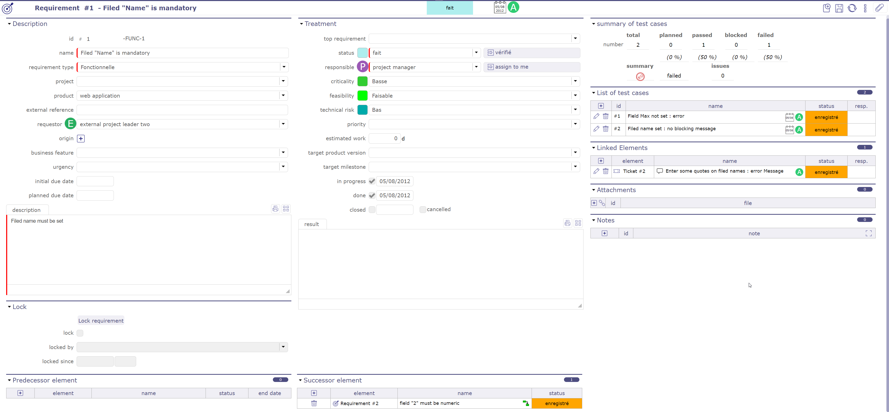
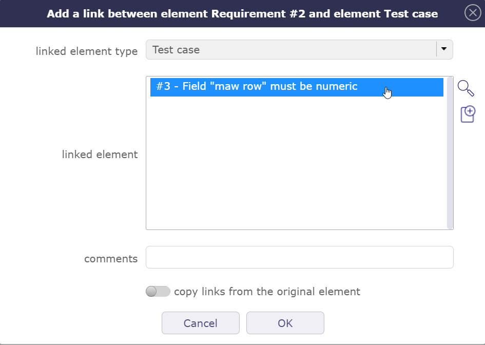
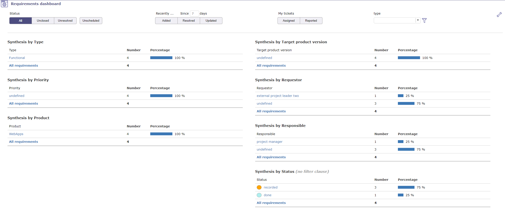
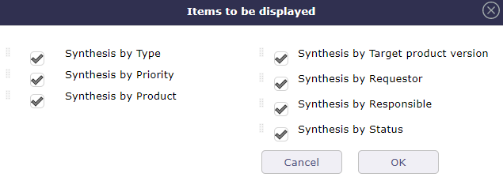
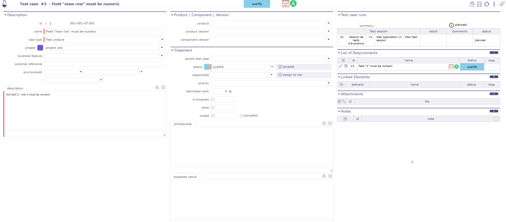
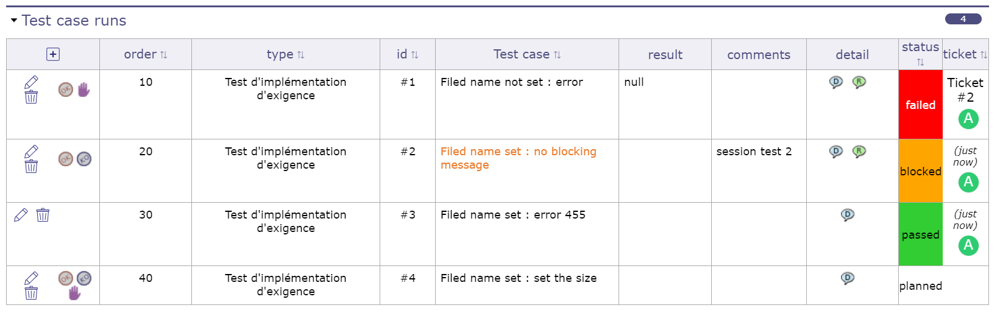
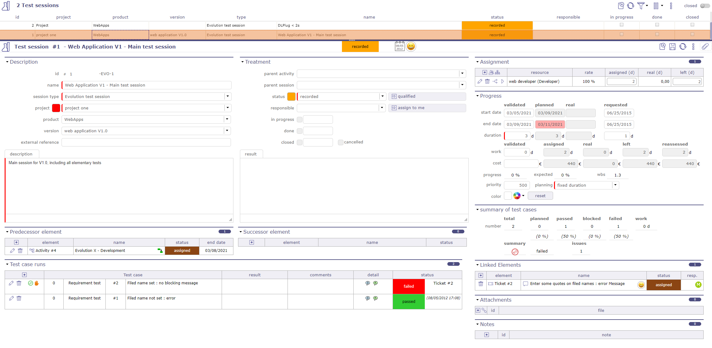
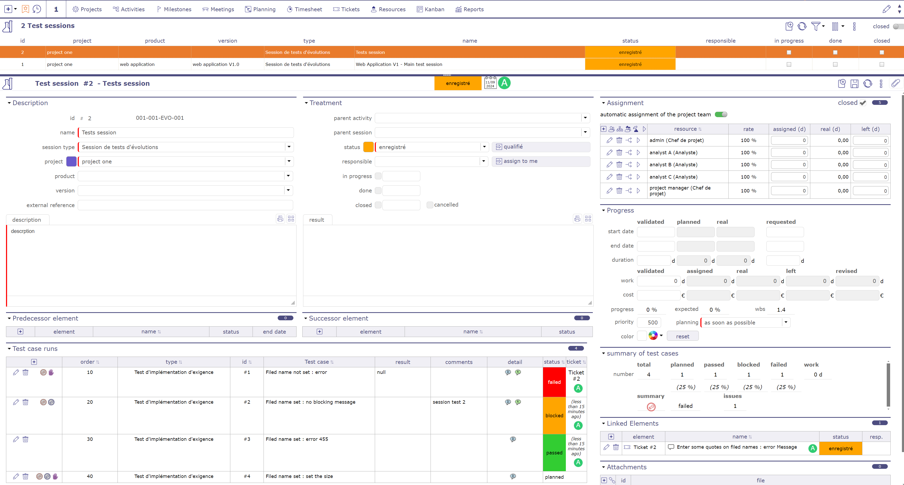
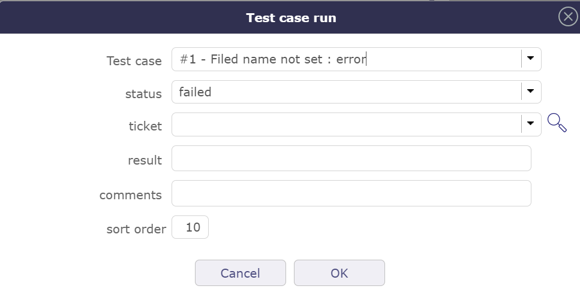

Exigences et tests¶
Exigences¶
Une exigence est une règle définie pour un projet ou un produit.
Dans la plupart des projets informatiques, une exigence peut être une règle fonctionnelle pour un logiciel.
Elle permet de définir et surveiller les coûts et les délais.
Elle peut être liée à des cas de test, utilisés pour décrire comment vous testerez qu’une exigence donnée est satisfaite.

Écran des exigences¶
Lier des exigences à un projet limitera la visibilité, en respectant la gestion des droits au niveau du projet.
Lien de l’exigence aux cas de test¶
Les cas de test peuvent être liés à une exigence dans la Liste des cas de test.

Section liste des cas de test¶
Cliquez sur
 pour ajouter un cas de test qui couvrira l’exigence ou une partie de l’exigence.
pour ajouter un cas de test qui couvrira l’exigence ou une partie de l’exigence.

Ajouter un cas de test¶
Cliquez sur
 pour rechercher un élément qui n’est pas dans la liste
pour rechercher un élément qui n’est pas dans la listeCliquez sur
 pour créer un nouvel élément depuis la fenêtre contextuelle
pour créer un nouvel élément depuis la fenêtre contextuelle
Lier une exigence à un cas de test affichera un résumé de l’exécution du cas de test (défini dans la session de test). De cette façon, vous aurez un affichage instantané de la couverture des tests pour l’exigence.

Résumé des cas de test¶
Cette section résume le statut des exécutions de cas de test pour l’exigence et la session de test.
{kind=link}
{kind=link}
{kind=link}
{kind=link}
Exigence
Résume le statut des exécutions de cas de test pour les cas de test liés à l’exigence.
Comme un cas de test peut être lié à plusieurs sessions de test, le total peut être supérieur à celui lié à l’exigence.
Session de test
Résume le statut des exécutions de cas de test dans la session de test.
Lien de l’exigence aux tickets¶
Lorsque le statut d’exécution du cas de test est défini sur échoué, la référence à un ticket doit être définie (référence à l’incident).
Lorsque l’exigence est liée à un cas de test avec ce statut d’exécution, le ticket est automatiquement lié à l’exigence.
Éléments prédécesseurs et successeurs
Les exigences peuvent avoir des prédécesseurs et des successeurs.
Cela définit certaines dépendances sur les exigences.
Les dépendances n’ont pas d’effets spécifiques. C’est juste une information.
Indicateur de suivi
Possibilité de définir des indicateurs pour suivre le respect des valeurs de dates.
Respect de la date de fin validée
Respect de la date de fin planifiée
Respect de la date de début demandée
Respect de la date de début validée
Respect de la date de début planifiée
% utilisation finale des coûts validés (révisé/validé)
% utilisation finale du travail affecté (révisé/affecté)
% utilisation finale du travail validé (révisé/validé)
% utilisation finale du travail affecté (révisé/affecté)
% avancement du travail validé (réel/validé)
% avancement du travail affecté (réel/affecté)
% avancement réel
Note
Champs Projet et Produit
Doit concerner soit un projet, un produit, ou les deux.
Si le projet est spécifié, la liste des valeurs du champ « Produit » ne contient que les produits liés au projet sélectionné.
Champ Version cible
Contient la liste des versions de produit disponibles selon le projet et le produit sélectionnés.
Verrouillage
Une exigence peut être verrouillée pour s’assurer que sa définition n’a pas changé pendant le processus de mise en œuvre.
Verrouiller/Déverrouiller l’exigence
Bouton pour verrouiller ou déverrouiller l’exigence afin de la préserver des modifications.
Seul l’utilisateur qui a verrouillé l’exigence ou un utilisateur habilité peut déverrouiller une exigence.
Exigence verrouillée
Lorsqu’une exigence est verrouillée, les champs suivants sont affichés.
Vote sur l’exigence¶
Il est possible de voter sur une exigence. Dans l’onglet détail de chaque exigence, trouvez la section de vote. La valeur cible, la valeur actuelle, le nombre de votes et le taux de remplissage sont affichés.
Cliquez sur le bouton de vote pour attribuer un vote sur l’élément sélectionné.

Section de vote¶
Dans la fenêtre de vote, plusieurs informations telles que la limite maximale de points du vote que vous pouvez utiliser sur le vote de l’élément en question.
Votre vote personnel qui n’est pas nécessairement identique au maximum de points que vous pouvez attribuer.
Et enfin le nombre de points qu’il vous reste à dépenser dans la période d’utilisation définie en amont dans les règles d’attribution et d’utilisation des votes.

Fenêtre contextuelle de vote¶
Une fois que vous avez validé votre vote, si les accès spécifiques dédiés au vote ont été activés, un tableau apparaît pour afficher les noms des votants et les points que chacun d’eux a attribués à l’élément.
Si plusieurs personnes ont voté, le nombre cumulé de leurs points est affiché dans la valeur actuelle.
Vous continuez à voir le nombre de vos points déjà attribués, directement dans le bouton de vote ou dans le tableau si vous avez le droit de le voir.
Dans les accès spécifiques, si l’affichage du tableau est désactivé, vous pouvez afficher au moins les noms des votants.
Dans tous les cas, les noms des votants et les points qu’ils ont attribués sont nécessairement affichés dans le tableau.

Tableau de vote¶
Tableau de bord des exigences¶
Permet à l’utilisateur d’avoir une vue globale des exigences de ses projets.
Affiche plusieurs petits rapports, listant le nombre d’exigences par élément.
Des filtres sont disponibles pour limiter la portée.

Accès direct à la liste des exigences
Dans les rapports, cliquez sur un élément pour obtenir la liste des exigences correspondant à cet élément.
Paramètres
Cliquez sur
 pour accéder aux paramètres.
pour accéder aux paramètres.
Important
Pour la Synthèse par statut, les clauses de filtre ne sont pas applicables.

Permet de définir les rapports affichés à l’écran.
Permet de réorganiser les rapports affichés avec la fonctionnalité glisser-déposer.
En utilisant l’icône de la zone de sélection
 .
.
Filtres de portée
Les filtres vous permettent de restreindre l’affichage des exigences enregistrées.
Par statut, période, durée, élément clos, lié à l’utilisateur ou sans lien…
Aucune résolution planifiée
Non planifié : Exigences dont la résolution n’est pas planifiée dans une prochaine version du produit (version de produit cible non définie).
Cas de test¶
Les cas de test sont des actions élémentaires exécutées pour tester une exigence.
Vous pouvez définir plusieurs tests pour vérifier une exigence, ou vérifier plusieurs exigences avec un seul test.
Le cas de test est défini pour un projet, un produit ou l’un de ces composants.

Écran des cas de test¶
Lier un cas de test à un projet limitera la visibilité, en respectant la gestion des droits au niveau du projet.
Un cas de test peut avoir des prédécesseurs et des successeurs.
Cela définit certaines dépendances sur le cas de test.
Les dépendances n’ont pas d’effets spécifiques. C’est juste une information.
Champs Projet et Produit
Doit concerner soit un projet, un produit, ou les deux.
Si le projet est spécifié, la liste des valeurs du champ « Produit » ne contient que les produits liés au projet sélectionné.
Champ Version
Contient la liste des versions de produit et de composant disponibles selon le projet et le produit sélectionnés.
Champ Environnement (Contexte)
Les contextes sont initialisés pour les projets IT comme « Environnement », « OS » et « Navigateur ».
Ces valeurs peuvent être facilement modifiées dans l’écran Contextes.
Champ « Description »
La description du cas de test doit décrire les étapes pour exécuter le test.
Note
Si le champ Prérequis est laissé vide et que le cas de test a un parent, le prérequis du parent sera automatiquement copié ici.
Exécution du cas de test¶

Exécution du cas de test¶
Réussi : Le test a réussi (le résultat est conforme au résultat attendu).
Bloqué : Impossible d’exécuter le test en raison d’un incident préalable (incident bloquant ou incident sur un test précédent) ou d’un prérequis manquant.
Cette section permet d’afficher une liste complète des exécutions de cas de test. Ce sont des liens du test vers les sessions de test. Cette liste affiche également le statut actuel du test dans les sessions.
Avertissement
Champ Résumé
Une icône qui présente le statut d’exécution du cas de test.
Pour plus de détails, voir : Résumé du statut d’exécution des cas de test.
Pour y accéder, cliquez sur la session de test correspondante.
Sessions de test¶

Écran de session de test¶
Une session de test définit l’ensemble des tests à exécuter pour atteindre un objectif donné, comme couvrir une exigence.
Définissez dans les exécutions de cas de test tous les cas de test qui seront exécutés pour cette session de test.
Pour chaque exécution de cas de test, définit le statut des résultats des tests
La session de test est définie pour un projet, un produit ou l’un de ces composants.
Voir aussi
Gestion des droits
Lier une session de test à un projet limitera la visibilité, en respectant la gestion des droits au niveau du projet.
Regroupement des sessions de test
Une session de test peut avoir des parents pour regrouper les sessions de test.
Élément de planification
Une session de test est un élément de planification comme Activité.
Une session de test est une tâche dans une planification de projet de type Gantt.
Permet d”affecter une ressource et de suivre l’avancement.
Éléments prédécesseurs et successeurs
Les sessions de test peuvent avoir des prédécesseurs et des successeurs.
Cela définit certaines dépendances sur les cas de test ou des contraintes de planification.
Indicateur de suivi
Les indicateurs peuvent être définis dans la Liste des valeurs.
Voir : État de santé et Avancement global
Note
Champs Projet et Produit
Doit concerner soit un projet, un produit, ou les deux.
Si le projet est spécifié, la liste des valeurs du champ « Produit » ne contient que les produits liés au projet sélectionné.
Champ Version
Contient la liste des versions de produit et de composant disponibles selon le projet et le produit sélectionnés.
Exécutions de cas de test¶

Écran d’exécution de cas de test¶
Cette section permet de gérer les exécutions de cas de test.
Vous pouvez trier la liste des cas de test par ordre, type, id, nom, statut ou tickets.
Section d’exécution de cas de test¶
Cliquez sur
pour ajouter une exécution de cas de test. La boîte de dialogue d’exécution de cas de test apparaîtra.Cliquez sur
 pour modifier une exécution de cas de test. La boîte de dialogue de détail d’exécution de cas de test apparaîtra.
pour modifier une exécution de cas de test. La boîte de dialogue de détail d’exécution de cas de test apparaîtra.Cliquez sur
 pour supprimer une exécution de cas de test.
pour supprimer une exécution de cas de test.Cliquez sur pour marquer l’exécution de cas de test comme réussie.
Cliquez sur pour marquer l’exécution de cas de test comme échouée. La boîte de dialogue de détail d’exécution de cas de test apparaîtra.

Fenêtre contextuelle test échoué¶
Lorsque le statut est défini sur échoué, la fenêtre contextuelle vous permet de créer un ticket (référence à l’incident) ou un commentaire.
Si vous créez un ticket, il est automatiquement ajouté aux Liens.
Les informations sur le ticket sélectionné sont également affichées et le ticket est cliquable pour accéder à son écran dédié.
Le champ ticket n’apparaît que si le statut de l’exécution du cas de test est échoué.
Champ Cas de test
Cette icône
 apparaît lorsque le champ commentaire de l’exécution du cas de test est renseigné.
apparaît lorsque le champ commentaire de l’exécution du cas de test est renseigné.Déplacer la souris sur l’icône affichera les commentaires de l’exécution du cas de test.
Champ Détail
Déplacer la souris sur l’icône affichera la description du cas de test.
Déplacer la souris sur l’icône
 affichera le résultat attendu du cas de test.
affichera le résultat attendu du cas de test.Déplacer la souris sur l’icône affichera le prérequis du cas de test.